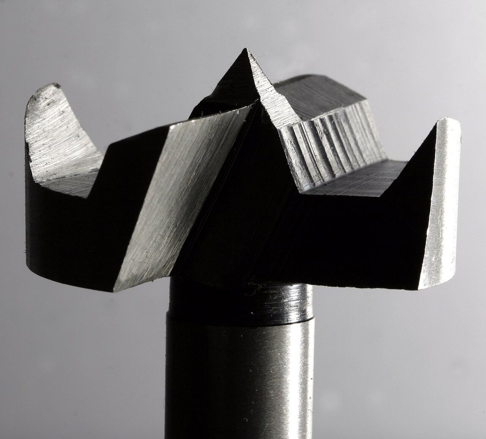
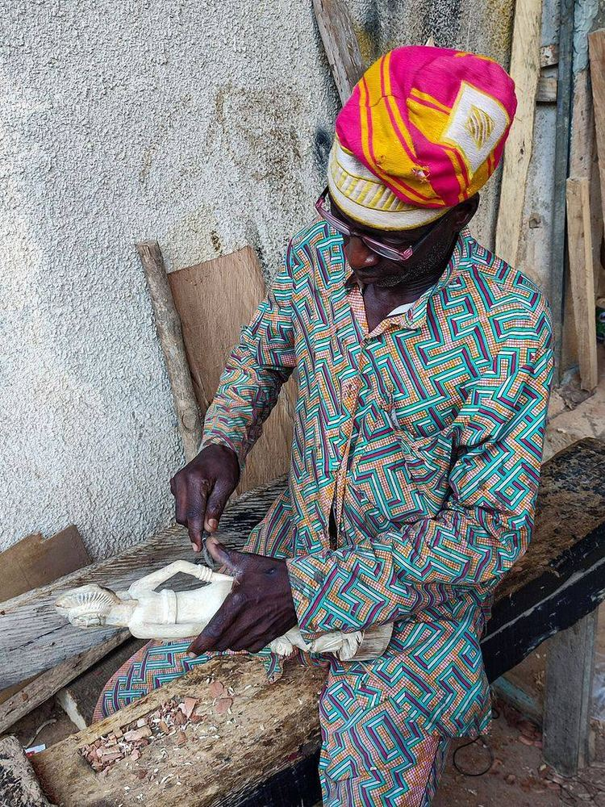
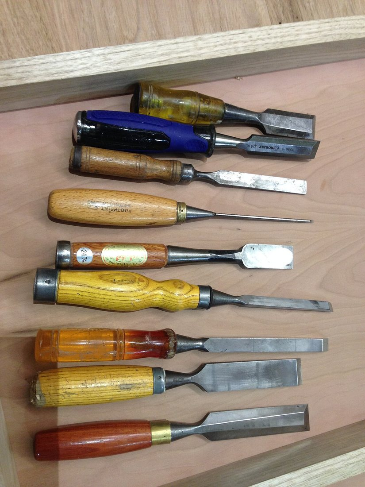
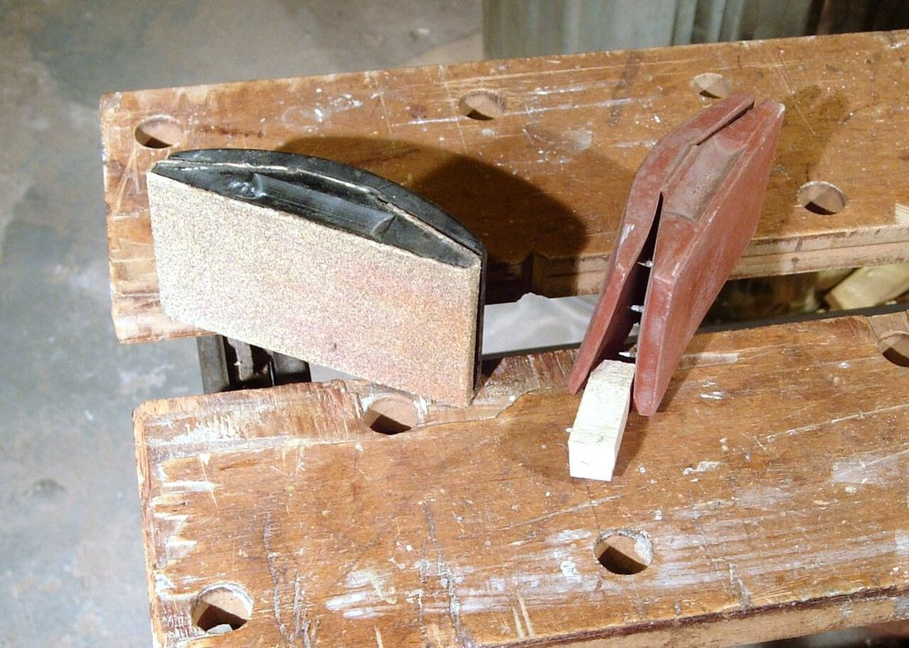

Көркем еңбек (ұлдар) · 2-бөлім · Ағаш өңдеу Art & Craft (Boys) · Section 2 · Woodworking Художественный труд (мальчики) · Раздел 2 · Обработка древесины
🛠️ Бұрғылау, ою және тазалау
🛠️ Drilling, Chiselling, Sanding
🛠️ Сверление, долбление, зачистка
Тесік ашу, ұя ою және бетті тегістеу — бұйымды дайын күйге жеткізетін үш амал. Boring holes, cutting recesses and smoothing the surface — three steps that finish a workpiece. Получение отверстий, выборка гнёзд и выравнивание поверхности — три операции, доводящие изделие до готовности.
Ағашты пішінге келтіріп, біріктіргеннен кейін көбіне тесік ашу (бұрандама, ағаш қазық, топса үшін), ұя ою (тенон-ұя қосылысы үшін) және бетті тазалау қажет. Бұл үш амал бұйымды дәл әрі әдемі етеді. Әрбір амалдың өз құралы, өз тәсілі және өз қауіпсіздік ережелері бар. Дұрыс реттілік: алдымен бұрғылау мен ою, ең соңында тазалау — өйткені кесу мен жону кезінде жаңа сызаттар пайда болады. After wood is shaped and joined, you usually need to bore holes (for screws, dowels and hinges), cut recesses (for a mortise-and-tenon joint) and smooth the surface. These three operations make a workpiece accurate and attractive. Each one has its own tools, technique and safety rules. The correct order is drilling and chiselling first, and sanding last — because cutting and fitting always leave fresh marks. После того как древесину распилили, обстрогали и соединили, обычно нужно получить отверстия (под шурупы, нагели, петли), выбрать гнёзда (для соединения «шип-проушина») и выровнять поверхность. Эти три операции делают изделие точным и красивым. У каждой свой инструмент, своя техника и свои правила безопасности. Правильный порядок: сначала сверление и долбление, и только в самом конце — зачистка, потому что резка и подгонка всегда оставляют новые следы.
🔧 Үш негізгі амал 🔧 The Three Core Operations 🔧 Три основные операции
БұрғылауDrillingСверление
Айналатын бұрғымен дөңгелек тесік ашу. Қол дрелімен немесе тік бұрғылау станогында орындалады. Making a round hole with a rotating bit, using a hand drill or a drill press. Получение круглого отверстия вращающимся сверлом — ручной дрелью или на сверлильном станке.
Ою (қашау)ChisellingДолбление
Қашаумен (стамеска) және ағаш балғамен төрт бұрышты ұя немесе ойық кесу. Cutting a square recess or groove with a chisel struck by a wooden mallet. Выборка прямоугольного гнезда или паза стамеской (долотом) с ударом киянкой.
ТазалауSandingЗачистка
Ажарлағыш қағазбен (шкурка) бетті тегістеп, талшық бойымен жылтыр етіп өңдеу. Smoothing the surface with sandpaper, always working along the grain. Выравнивание поверхности наждачной бумагой (шкуркой) строго вдоль волокон.
🌀 Тесікті дұрыс бұрғылау 🌀 How to Drill a Hole Correctly 🌀 Как правильно просверлить отверстие
Тесіктің таза әрі дәл шығуы реттілікке байланысты. A clean, accurate hole depends on following the right order. Чистота и точность отверстия зависят от правильной последовательности.
Белгілеу. Тесік ортасын білікпен (шило) тесіп белгілеңіз — бұрғы сырғымайды. Mark the centre. Punch a small dent with an awl so the bit cannot wander. Разметка. Наколите центр шилом — сверло не «уведёт» в сторону.
Бекіту. Дайындаманы қысқышпен (струбцина) үстелге берік бекітіңіз. Clamp the work. Fix the workpiece firmly to the bench with a clamp. Закрепление. Надёжно зажмите заготовку струбциной на столе.
Бұрғыны таңдау. Тесік диаметріне сәйкес ағаш бұрғысын қойып, тік ұстаңыз. Choose the bit. Fit a wood bit of the right diameter and hold the drill vertical. Выбор сверла. Вставьте сверло по дереву нужного диаметра, держите дрель вертикально.
Бұрғылау. Біркелкі баспен бұрғылаңыз; шетке жетерде қысымды азайтыңыз. Drill steadily. Apply even pressure; ease off as the bit nears the far side. Сверление. Давите равномерно; у выхода сверла ослабьте нажим.
Жыртықты болдырмау. Астына керексіз тақтай қойыңыз — шыққан жер жыртылмайды. Prevent tear-out. Place a scrap board underneath so the exit stays clean. Без сколов. Подложите снизу обрезок доски — выход отверстия будет чистым.
Тазарту. Жоңқаны үрлеп шығарыңыз, тесік жиегін зімпарамен тегістеңіз. Clean up. Blow out the chips and ease the rim with fine sandpaper. Очистка. Удалите стружку, снимите заусенцы с края мелкой шкуркой.
📷 Құралдар мен амалдар 📷 Tools & Operations 📷 Инструменты и операции
🔍 Үлкейту үшін суретті басыңыз. 🔍 Tap an image to enlarge it. 🔍 Нажмите на фото, чтобы увеличить.





📏 Түйіршік (зернистость)📏 Grit (P-number)📏 Зернистость (номер P)
Зімпара нөмірі неғұрлым үлкен болса, түйіршік соғұрлым ұсақ. Алдымен ірі (P80) → одан кейін орташа (P120) → соңында ұсақ (P240) қолданылады. The higher the P-number, the finer the grit. Start coarse (P80) → then medium (P120) → finish fine (P240). Чем больше номер P, тем мельче зерно. Сначала крупная (P80) → затем средняя (P120) → в конце мелкая (P240).
📊 Амал, құрал, нәтиже 📊 Operation, Tool, Result 📊 Операция, инструмент, результат
| Операция | Инструмент | Что получаем | Главное правило |
|---|---|---|---|
| Сверление | Дрель, сверло по дереву, сверлильный станок | Круглое отверстие | Сверло держать строго перпендикулярно |
| Долбление | Стамеска, долото, киянка | Гнездо или паз | Резать от середины к краям разметки |
| Зачистка | Наждачная бумага, брусок, рашпиль | Гладкая поверхность | Шлифовать только вдоль волокон |
| Амал | Құрал | Нәтиже | Басты ереже |
|---|---|---|---|
| Бұрғылау | Дрель, ағаш бұрғысы, бұрғылау станогы | Дөңгелек тесік | Бұрғыны қатаң тік ұстау |
| Ою | Қашау, долото, ағаш балға | Ұя немесе ойық | Ортадан белгі шетіне қарай кесу |
| Тазалау | Зімпара қағазы, блок, рашпиль | Тегіс бет | Тек талшық бойымен ажарлау |
| Operation | Tool | Result | Key rule |
|---|---|---|---|
| Drilling | Drill, wood bit, drill press | A round hole | Keep the bit strictly perpendicular |
| Chiselling | Chisel, mortise chisel, mallet | A recess or groove | Cut from the centre toward the marked edges |
| Sanding | Sandpaper, block, rasp | A smooth surface | Sand only along the grain |